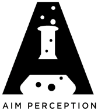

AIMP Labs draws inspiration from the curiosity driven free thinking that a typical academic
environment provides. Yet, it also recognizes the industry's paramount role in realizing the
lab-to-marketplace transitions. Envisaged and founded as a private research organization, AIMP Labs aspires
to work at the intersection of academia and industry, while addressing the common limitations and thereby
bridging the gap between these two enterprises.
AIMP Labs engages in the development of a local ecosystem (in and around Kolkata) for
facilitating advanced research and technology development process in the field of artificial
intelligence and computer vision. As a research based organization, AIMP has a long term vision
of conducting high-impact research, promoting future researchers, and creating state-of-the-art visual
technologies of the future.
AIMP Labs values robust, reliable, and responsible development and uses of modern AI perception technologies. In the
everyday life, AIMP fosters a culture of openness and trust in its team of researchers. The deep and
strong relationship that AIMP shares with its many partners also constitutes a part of its core values.